Curiosidades
Curiosidades sobre as araras
As araras estão entre os pássaros mais belos da fauna brasileira. São aves grandes e possuem e um bico curvo resistente usado para quebrar frutos e sementes. A palavra arara denomina várias aves da família dos psitacídeos, pertencentes aos gêneros Anodorhynchus, Cyanopsitta e Ara. Suas penas têm colorido forte como o vermelho, azul e amarelo, sendo muito usadas na confecção de cocares entre as tribos indígenas. Ao todo, existem 18 espécies, distribuídas por toda a América tropical. A mais frequente no Brasil é a arara-azul ou araraúna (Anodorhynchus hyacinthinus), de corpo azul e detalhes amarelos no peito. As araras vivem em casais nas copas das árvores mais frondosas e fazem seus ninhos em ocos de árvores. Além de tudo são muito barulhentas e adoram uma algazarra. Confira abaixo algumas curiosidades:
- • As araras têm hábito solitário. É comum encontrar apenas casais.
- • Algumas espécies estão em extinção.
- • As araras não falam como os papagaios, mas conseguem aprender algumas palavras.
- • Antigamente, ter uma arara indicava grande riqueza.
- • Todas as araras têm bico forte, língua carnosa e cauda longa, em forma de espada.
- • Elas usam o bico para escavar o tronco das árvores e comer larvas de insetos.
- • No total, existem 18 espécies de araras. A arara azul é apenas uma delas.
Espécies de Araras
| Aparência | Gênero | Nome científico | Espécie | Risco de extinção |
|---|---|---|---|---|
| 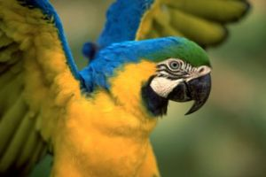 | Ara | Ara ararauna | Arara-canindé | Mínimo |
| 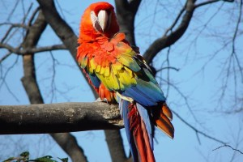 | Ara | Ara chloropterus | Arara-vermelha-grande ou Ararapiranga | Mínimo |
| 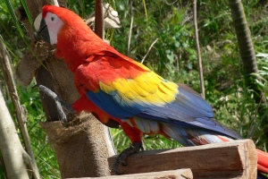 | Ara | Ara macao | Arara-vermelha ou Araracanga | Mínimo |
| 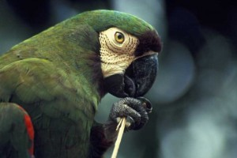 | Ara | Ara severus ou Ara severa | Maracanã-guaçu | Mínimo |
| 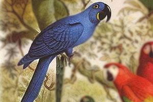 | Anodorhynchus | Anodorhynchus glaucus | Arara-azul-pequena ou Arara-cinza-azulada | Extinta |
| 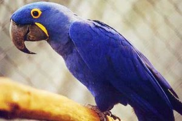 | Anodorhynchus | Anodorhynchus hyacinthinus | Arara-azul-grande ou Arara-azul | Em perigo |
| 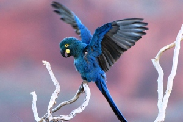 | Anodorhynchus | Anodorhynchus leari | Arara-azul-de-lear | Em perigo |
 |
Cyanopsitta | Cyanopsitta spixii | Ararinha-azul | Extinta |
| 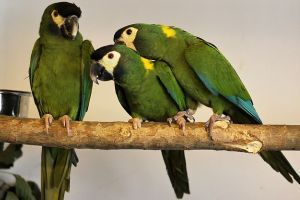 | Primolius | Primolius auricollis | Maracanã-de-colar | Mínimo |
| 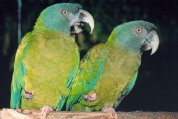 | Primolius | Primolius couloni | Maracanã-de-cabeça-azul | Em perigo |
| 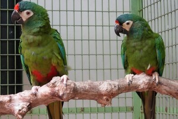 | Primolius | Primolius maracanã | Maracanã-verdadeira | Em perigo |
| 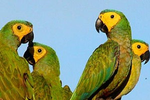 | Orthopsittaca | Orthopsittaca manilata | Maracanã-de-cara-amarela ou Maracanã-do-buriti | Mínimo |
| 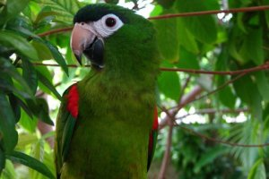 | Diopsittaca | Diopsittaca nobilis | Maracanã-pequena | Mínimo |